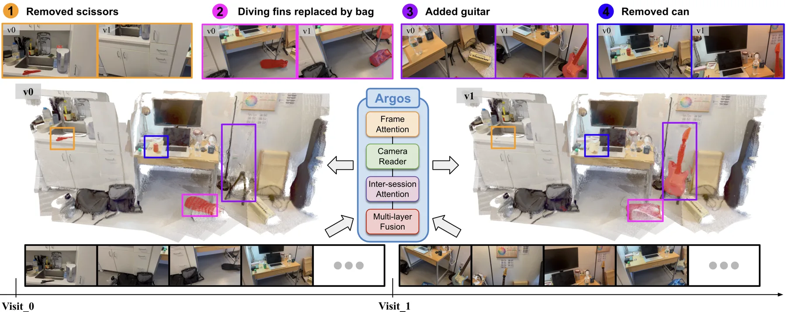
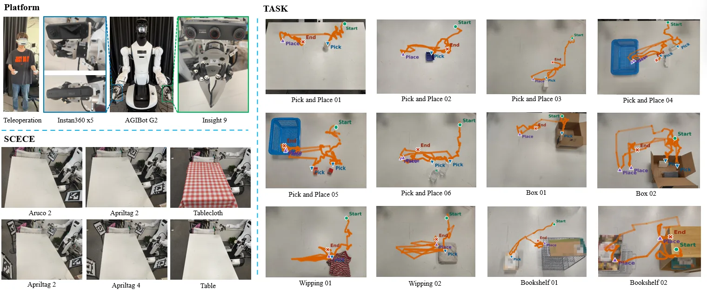
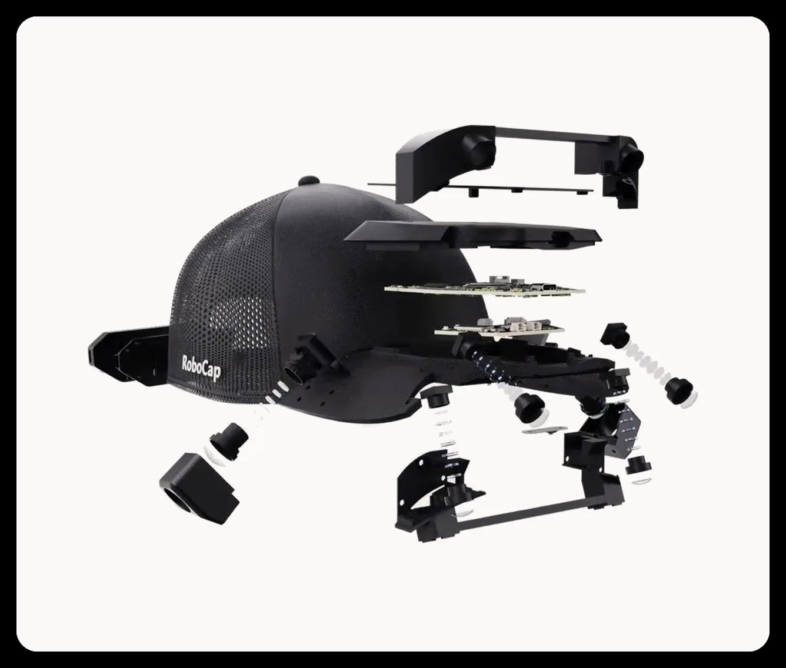
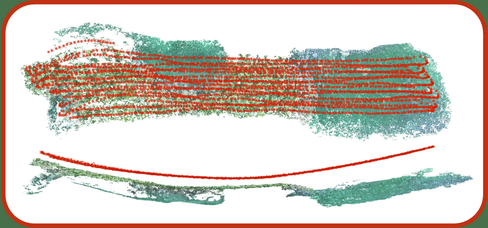

新论文 · 日期 2026-10-07 · score 11 · S层 · Geometry Foundation Models / 3D Foundation Models · cs.CV
内容级别：完整单篇海报
作者：Zhijie Zheng, Xinhao Xiang, Jiawei Zhang
评分 11/10
3D 基础模型渲染专用几何冻结骨干双趟评估复制解码器目标位姿条件适配器度量预测保持
一句话工作总结：从冻结 3D 基础模型中解码出第二套“渲染专用几何”：用复制解码器（RDGD）在纯光度监督下重定位高斯图元，再用目标位姿条件适配器（TCA）在残差流内让表示依赖被渲染视角；四基准三骨干全部提升（WM2.0 RE10K 20.918→24.266 dB），同时度量深度/位姿逐位不变，仅训练 205.5 M 参数（14.7%）。
3D 基础模型通过在重建所用表示上挂一个高斯头来实现高效新视角合成；但它们渲染出的视角达不到其恢复的几何质量，因为该几何是在度量目标下估计、从未按渲染效果被评分。近期方法通过更新骨干权重来缓解，却因此丢弃了模型原本擅长的度量预测，且每换一个骨干都要重做。为此，本文提出 RDGSplat：从冻结的 3D 基础模型中解码出第二套“渲染专用几何”，同时保持其度量预测不变。具体地，作者设计渲染专用几何解码（Render-D…
3D foundation models enable efficient novel view synthesis by carrying a Gaussian head on the representation they already use for reconstruction. However, the views they render fall short of the geometry they…

新论文 · 日期 2026-10-07 · score 5 · S层 · Geometry Foundation Models / 3D Foundation Models · cs.CV
内容级别：完整单篇海报
作者：Ruihan Xu, Jiae Yoon, Kaichen Zhou, Ue-Hwan Kim
评分 5/10
几何基础模型场景变化检测共视感知跨 session 比较VGGT-Ω 冻结骨干change-aware 4D 建图实时 SLAM 系统
一句话工作总结：把几何基础模型 VGGT-Ω 的隐式 3D 特征通过“共视感知的跨 session 比较器”（相机读取器 + 跨 session 交叉注意力 + DPT 融合头）适配到“两趟未定位 RGB 观测”的变化检测与重建；自建 Argos-CD 等基准上变化 IoU 最多 +42.01%、F1 +27.91%，并接入 VGGT-SLAM 形成实时 change-aware 4D 建图…
在动态环境中运行的机器人需要可靠地检测周围环境随时间如何变化。现有基于学习的方法大多依赖成对 2D 图像特征，在大视角变化和遮挡下表现不佳、对噪声敏感、跨域泛化有限；而显式 3D 方法通常需要昂贵的离线优化。本文表明，几何基础模型（Geometric Foundation Models, GFM）的隐式 3D 知识为解决这些限制提供了坚实基础。作者提出 Argos，适配 GFM 特征以联合完成场景变化检测与 3D…
Robots operating in dynamic environments require reliable detection of how their surroundings change over time. Existing learning-based methods largely rely on pairwise 2D image features, which struggle under…

新论文 · 日期 2026-10-07 · score 10 · A层 · Robust State Estimation / Uncertainty · cs.RO
内容级别：半海报
作者：Junjie Zhang, Deteng Zhang, Zhisong Xu, Bo Sun
评分 10/10
操作接口定位鱼眼视觉惯性里程计AprilTag 辅助 VIO序列局部标记几何先验准入与导出守护示教回放容差
一句话工作总结：提出近距操作接口定位基准 MILD（86 段真实序列 / 15 类桌面任务 / 三种工作空间变体 + Isaac Sim 子集）与 AprilTag 辅助鱼眼 VIO 系统 AprilVINS；后者在无预测绘标记地图下把序列局部 tag 先验准入滑窗并守护导出，AprilTag4 上 TCP 相对 APE RMSE 达 2–10 mm（无标记 VIO 为 30–80 mm），…
为机器人示教学习恢复末端执行器轨迹，需要定位在夹爪接近物体、遮挡相机并与工作空间交互时保持准确且时间完整。现有 SLAM 基准侧重导航运动，而操作数据集更关注策略学习而非定位评估。作者提出 MILD——一个含真实与仿真序列的操作接口定位数据集。真实子集提供来自 Insta360 X5 与 Insight9 的 86 段传感器序列、覆盖 15 个重复桌面任务、标定资产与逐次执行的机器人末端参考轨迹；仿真子集 MILD…
Robot demonstration learning requires accurate and temporally complete end-effector localization during close-range manipulation and camera occlusion. Existing SLAM benchmarks emphasize navigation motions, whe…

新论文 · 日期 2026-10-06 · score 7 · A-层 · Real-time / GPU Robotics Systems · cs.RO, cs.AI, cs.CV, cs.HC
内容级别：简报式摘要
作者：Grounded Superintelligence, BitRobot
评分 7/10
第一视角数据采集可穿戴多相机平台端侧 SLAM第一视角深度估计手部跟踪机器人学习数据
一句话工作总结：提出 250 g 六相机双 IMU 可穿戴采集设备 RoboCap 与配套 Grounded API（SLAM、第一视角深度估计、手部跟踪），主打野外第一视角操作数据的厘米级采集精度与跨装置泛化。
尽管第一视角操作数据对扩展机器人学习很有前景，但目前仍十分稀缺。规模化采集需要把人体工学硬件与厘米级精度的 3D 算法做垂直整合，而这一精度此前未被公开证明。为填补空白，作者提出 RoboCap——一顶 250 g、六相机双 IMU、面向野外第一视角数据采集的头戴设备，以及配套的 Grounded API——一套为 RoboCap 调优的设备无关 3D 算法。该报告展示了硬件、标定与 3D 算法如何相互作用，以在公…
Despite its promise for scaling robot learning, egocentric manipulation data is still scarce today. Collection at scale requires vertically integrating ergonomic hardware with centimeter-precise 3D algorithms,…

新论文 · 日期 2026-10-06 · score 13 · B-层 · Traditional LiDAR/Visual SLAM · cs.CV
内容级别：简报式摘要
作者：Chelim Lim, Tobias Fischer, Emilio Olivastri, Beverley Gorry
评分 13/10
水下 3D 重建平口折射校正图像空间几何校正SfM/VSLAM 预处理度量精度光线追迹仿真
一句话工作总结：提出与下游解耦的图像空间物理折射校正，把平口防水壳造成的碗状畸变在重建前移除；在两个真实水下数据集上相比传统/折射式 SfM 配准更多帧并保持低重投影误差，可跨多种重建与 VSLAM 后端使用。
消费级相机配平口防水壳因低成本与易得，被广泛用于水下探索以及珊瑚礁与海底栖息地测绘。但平口界面的折射会在重建场景与相机轨迹中造成碗状形变，损害测绘与导航所需的度量精度。为在重建前移除主导性折射畸变，作者提出一种图像空间的、基于物理的折射校正。该方法与下游解耦：校正后的图像可直接作为现有重建与 SLAM 算法的输入。作者用光线追迹仿真刻画折射畸变，并在两个不同场景结构的真实水下数据集上验证。与传统及折射式 SfM 相…
Consumer-grade cameras in flat-port housings are widely used for underwater exploration and mapping of coral reefs and seafloor habitats due to their low cost and accessibility. However, refraction at flat-por…